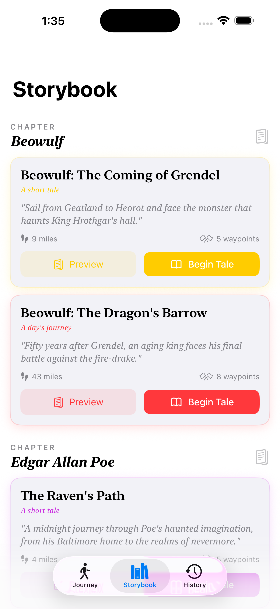
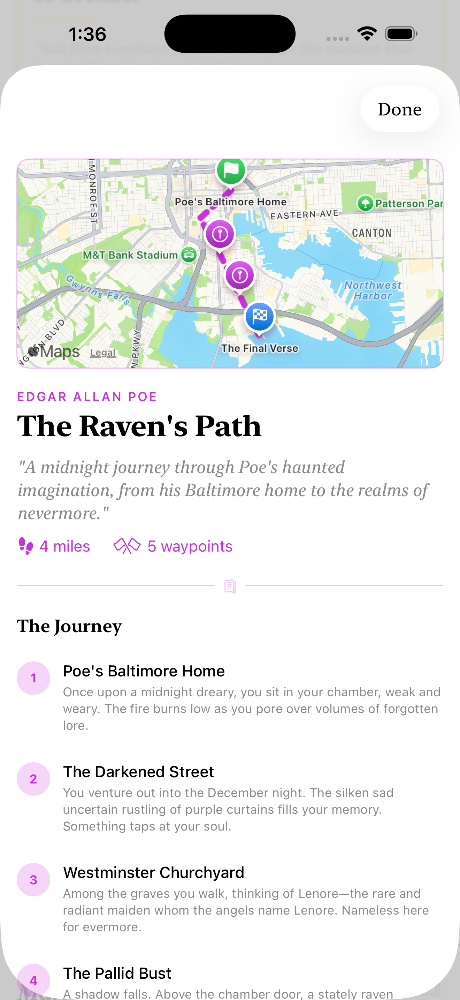
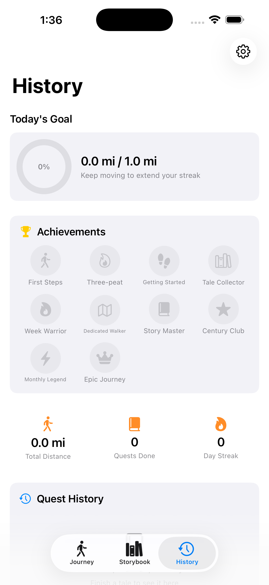

A story map that moves with you
Every journey is pinned to real geography. Your marker travels the actual road from Geatland to Heorot, from the Shire to Bree, and the map shows how far the next passage lies.
For iPhone · Works with Apple Health
Footnotes turns the distance you walk into passages from the world's great tales. Set out from Ithaca with Odysseus, cross the whale-road with Beowulf, or trace Poe's shadowed lanes, one real-world mile at a time.
How it works
No routes to plan, no GPS trail to follow. Walk wherever you like; the story keeps pace with you.
Pick a tale from the Storybook. Each journey is a real-world route, mapped waypoint by waypoint, with a passage waiting at every stop.
Twelve included · more in the quest galleryYour neighbourhood loop, the commute, a Sunday ramble. Footnotes reads your walking distance from Apple Health, so there is nothing to start or stop.
Tap Sync to pull in the latest stepsAs the miles add up, your marker advances along the route and the next passage opens. Finish the road and the tale is yours.
Earn achievements along the wayWhat's inside
Every journey is pinned to real geography. Your marker travels the actual road from Geatland to Heorot, from the Shire to Bree, and the map shows how far the next passage lies.
No start button, no tracking screen. Footnotes reads the walking distance your iPhone already records and turns it into progress.
Each waypoint reveals a short, atmospheric passage written for that moment in the tale. Read it on the spot or save it for the kettle.
Every finished road goes on the shelf. Look back over the tales you've walked, the miles behind them, and the milestones you hit along the way.
Journeys are plain text files. Tap one on the web and it opens straight into your library, so fans can write and share roads of their own.
Epic, adventure, mystical, gothic, dramatic, survival. Each theme restyles the map, the route line and the markers to suit the story you're walking.
In the app



Included with the app
Public-domain classics, each told in two walks: a short tale to get you started and a longer road for the weeks ahead.
Old English epic
Homer
American Gothic
Along the Mississippi
Tragedies
Old Testament
Want Middle-earth, Hogwarts, Panem, Cold War London or Stephen King's Maine? Those live in the bonus quest gallery, one tap away from your library.
Journey Builder
A journey is just a text file: a title, a handful of pins on a map, and a passage for each. Our free web builder does the fiddly parts.
.journey file, host it anywhere, and share a tap-to-import link.# The Walk to Hollow Hill **Description:** A lantern-lit climb through the old orchard to the stones above the village. **Category:** Village Tales **Color:** #7A3E12 **Character:** The Lamplighter **Theme:** mystical --- ## Waypoints ### The Lychgate 📍 51.4034, -2.3542 📏 1800m The gate groans as you pass. Behind you the village lamps go out one by one...
Good to know
No. The routes are real places, but you walk wherever you are. Footnotes maps the distance you cover at home onto the story's road, so a loop of your own park can carry you from the Shire to Bree.
From Apple Health, which your iPhone (and Apple Watch, if you wear one) already fills in as you move. Footnotes reads your walking distance from there, so there is nothing to start or stop.
It depends on the road. The short tales run a few miles and suit a week of ordinary walking; the longer journeys stretch to hundreds of miles and make a fine season-long project. Every quest shows its total distance before you begin.
Not yet. Footnotes is built for iPhone and relies on Apple Health. The quest gallery and Journey Builder on this site work in any browser.
Yes. Open the Journey Builder, place your waypoints, write your passages and export. Anyone with the app can import the file with a single tap.
Download Footnotes, choose a tale, and let tomorrow's walk carry you somewhere worth reading about.
Requires an iPhone with Apple Health.